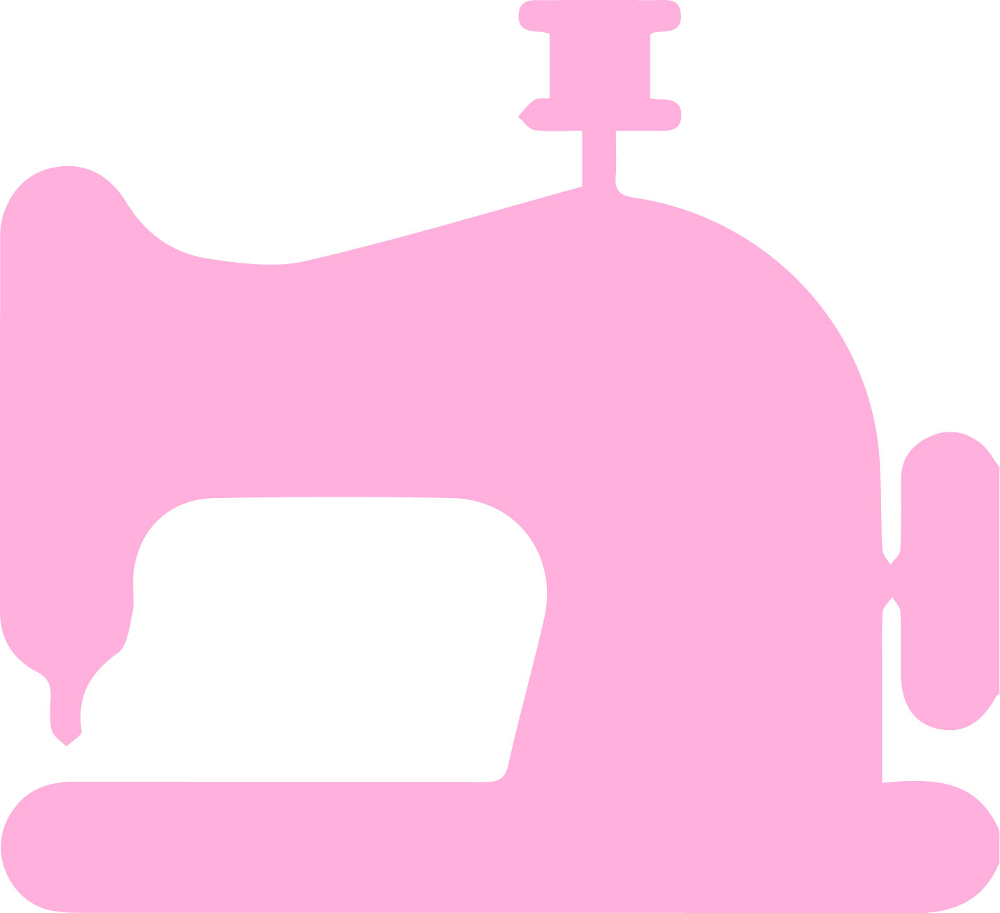

Styro Cutting
I do styro letterings and decor, mostly for family and for our Church events.
Gardening
Growing fruits, vegetables, flowers and other plants (especially orchids and cacti) has always been a favorite thing to do for me.

Crafting
Yet another art-related hobby! From sewing to making creative things from recycled items, these are things that pique my interest!